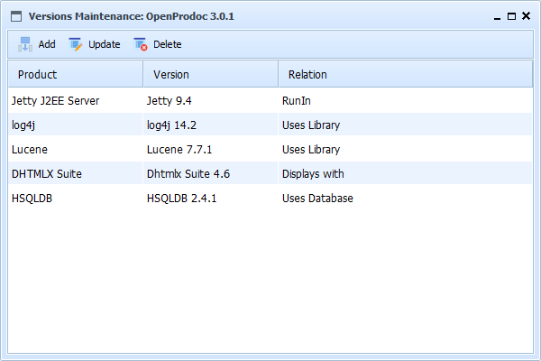

This form display tthe list of dependencies, that is the libraries, infraestructures, frameworks or any other kind of software this version depends on.
By dependency, it should be understood any kind of software required for compiling, running, installing, storing, viewing, etc. including libraries, databases, application servers, web browsers, operating systems, etc.
With the default configuration, the list area display the columns:
Selecting a products, and always if the security permissions asigned allow it, it is possible to use the options:

In SMO Tree there is a complete view of operations and forms.